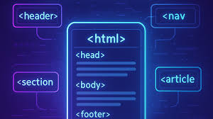

1. Estructura Semántica y Código más Limpio
- Uso de etiquetas semánticas como header, nav, section y article.
- Mejora la accesibilidad y el posicionamiento en buscadores (SEO).
Las nuevas etiquetas permiten organizar el contenido de forma clara y ordenada, facilitando el mantenimiento del sitio web.
